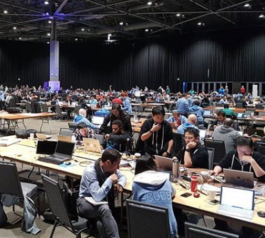

Projects
Primarily, I build stuff. See what I've been up to, and perhaps learn something from my mistakes.
Software Engineer, Chinese learner, and aspiring promise deliverer. 🌍💡🚀

Primarily, I build stuff. See what I've been up to, and perhaps learn something from my mistakes.
I write only occassionally, but on a range of topics. From making and technology (including tips/tutorials), to my travels. This might be of interest if you'd like to get to know me more.
Recent accomplishments I'm particularly proud of.
I work with Microsoft's major cloud customers as part of Microsoft CSE, to apply a range of Azure and open source technologies. With a background specialising in the field, my current focus is on helping these large companies operationalise machine learning and data science.
Lucky enough to work with a brilliant selection of scientists and engineers on everything from new text input methods for HoloLens, to chatbot-centered automated candidate assessment tools.
For my thesis implementing new research in handwritten mathematical expression recognition, I adopted the deep learning framework from FAIR, which straddles the simplifying modularity of Keras and flexibility of the more verbose and much loved TensorFlow.
I started my engineering career in the Huaqiangbei electronics district of Shenzhen, China, an opportunity I organised, and funded through my university's bursary programs for international work experience and underprivileged students. This exposed me to Android development, robotics, edtech, data science, and a new language and culture which affect me to this day.
In the "Best Prototype" category, for building Ignis: a prototype online learning platform centered around a conversational AI.
I later received a first class honours degree in Computer Science from the same institution.
Bringing one of the oldest student publications in England into the 21st century with up-to-date coverage and multimedia content, including YouTube and Twitch streaming. Alumni have - due to their own brilliant work on the platform - since gone on to work for the likes of Eurogamer.